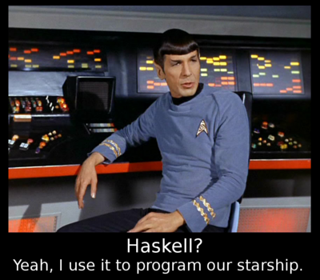

Über Haskell
Haskell unterscheidet sich deutlich von bekannten imperativen Sprachen: Ein Haskell-Programm besteht nicht etwa aus einer Abfolge von auszuführenden Anweisungen, sondern aus einer Ansammlung von Deklarationen, deren Reihenfolge keine Rolle spielt. Man schreibt nicht, wie etwas berechnet werden soll, sondern was. Auch gibt es keine veränderlichen Variablen, und ausgewertet wird nur, was wirklich benötigt wird; unendliche Datenstrukturen sind möglich und sinnvoll.
Folgender Code berechnet beispielsweise eine nie abbrechene Liste von Primzahlen:
primzahlen :: [Int] primzahlen = filterPrimzahl [2..] where filterPrimzahl (p:xs) = p : filterPrimzahl [x | x <- xs, x `mod` p /= 0]
Wenn man sich an das Denkparadigma von Haskell gewöhnt hat, profitiert man von dessen vielen Vorteilen:
- Haskell-Funktionen lassen sich einfacher wiederverwenden als Klassen in objektorientierten Programmiersprachen, da sie keinen Zustand mitschleppen. Das führt zu höherer Modularität.
- Man kann Funktionen isoliert voneinander verstehen, da es keine versteckten Interaktionen über veränderliche Variablen gibt.
- Haskell-Code ist kompakt und enthält nur wenig oder gar keinen Boilerplate.
- Haskells starkes statisches Typsystem hilft beim Programmieren und findet sehr viele Fehler schon während des Kompilierens. Dies ist besonders wertvoll beim Umstrukturieren von großen Projekten.
- Dank Typinferenz muss man aber nicht ständig Typen wiederholt hinschreiben (im Gegensatz zu Java).

Über den Curry Club Augsburg
Der Curry Club ist eine Gruppe von funktionalen ProgrammiererInnen in Augsburg und Umgebung, darunter viele Studierende der Informatik und Mathematik. Wir treffen uns alle vier Wochen donnerstags im OpenLab, um uns auszutauschen und voneinander zu lernen. Aufzeichnungen unserer Vorträge sind online. Benannt ist der Club nach dem Konzept des Curryings, einem fundamentalen Konzept funktionaler Programmiersprachen.